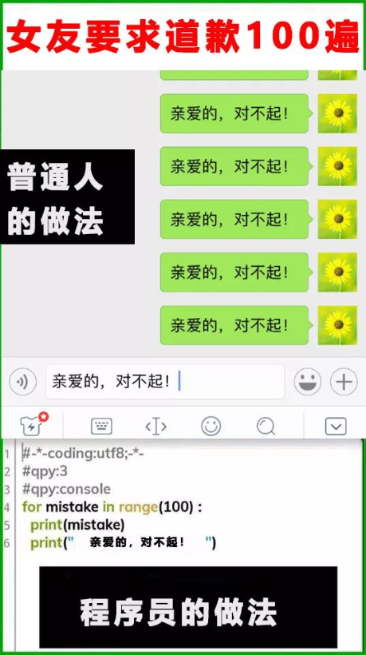
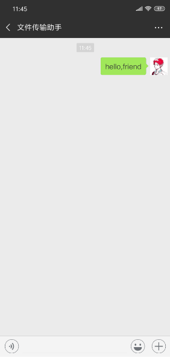
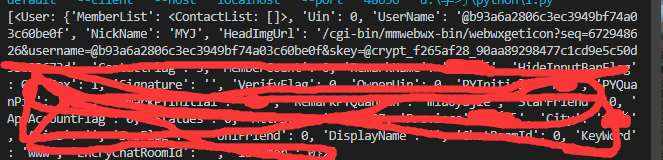
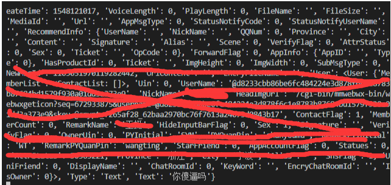
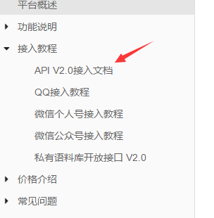
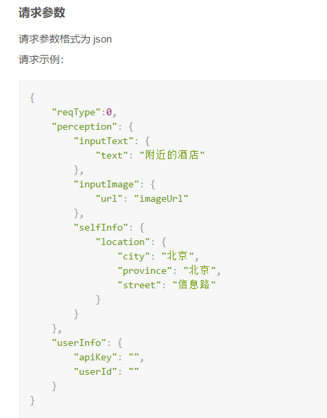

因为这周终于是闲了下来，没有出去做项目，也想着写点东西，刚巧在网上看到了一张图。没错就是下面这张，内容不是重点，那个python的输入法才是重点，于是我就去网上搜索，但是怎么也找不到。然后就想着，那我自己写一个微信发消息的好了。

itchat
一个微信个人号接口，详细请看https://github.com/littlecodersh/ItChat
有了这个模块，写这个功能就变的简单多了
简单入门
如果你想要给文件传输助手发一条信息，只要这样：1
2
3import itchat
itchat.auto_login()//如果你需要长期登录就加上hotReload=True
itchat.send('hello,firend',toUserName='filehelper'//filehelper特指文件传输助手，要发给其他人的话需要拿到username值)
效果如图所示

知道了怎么发消息，那其实最上面那张图的功能就可以实现了，写一个循环就行了。不过前面也说了，发给特定的人是需要获取他的username值的，所以我们需要把这个值获取。这个也简单，因为有现成的方法已经写好了只要用一下就行了1
obj = itchat.search_friends(name='')//当然这个name值是你自己那边的好友
以下是obj的值，可以看到有个username，这个就是我们需要的东西

那么接下来就是发送给他了，把itchat_send中的tousername的值换成抓下来的username的值就行了。这样简单的发送消息就实现了
自动回复
简单的发送会了，接下来我们就来实现自动回复的功能。itchat模块自带一个装饰器来接收信息。1
你可以print看一下接收到的数据是什么

接收到消息后，你只需要自定义一些消息，然后把它发回去就行了。当然如果你不想些规则去自定义这些消息，你可以使用图灵机器人来代替
图灵机器人
图灵机器人（Turing robot）是基于图灵测试理论，基于自然语言处理、知识库和云计算等技术，为广大开发者、合作伙伴提供的一系列智能语义处理能力（包括语义理解、智能问答、知识库对接等）的免费开放服务平台。企业与开发者可接入图灵机器人平台的API服务，将其运用到智能手机，智能电视，智能车载，智能移动端，网站客服等领域，实现自然语言的智能交互。
图灵机器人的使用
注册登录后的页面会有一个apikey，这个会用到。下面有个api使用文档，我们使用api接入

下面是请求事例

下面还有参数说明，简单来说就是perception和userInfo是必须的，其他需要用到看说明。代码如下1
2
3
4
5
6
7
8
9
10
11
12
13
14
15
16def robot(text):
url = "http://openapi.tuling123.com/openapi/api/v2"
data = {
"reqType":0,
"perception": {
"inputText": {
"text": text
}
},
"userInfo": {
"apiKey": "7f462c00cc1c471db476591a1dbd5243",
"userId": "123456"
}
}
r = requests.post(url,data=json.dumps(data)).json()//这里需要注意，网上很多教程没有使用json.dumps这个函数，一定得加上，不然会报错。
print(r['results'][0]['values']['text'])
自动回复加图灵机器人
有了上面的数据，再加上前面的发送消息。最后的代码如下：1
2
3
4
5
6
7
8
9
10
11
12
13
14
15
16
17
18
19
20
21
22
23
24
25
26
27
28
29
30
31import itchat
import requests
import json
def robot(text):
url = "http://openapi.tuling123.com/openapi/api/v2"
data = {
"reqType":0,
"perception": {
"inputText": {
"text": text
}
},
"userInfo": {
"apiKey": "7f462c00cc1c471db476591a1dbd5243",
"userId": "123456"
}
}
r = requests.post(url,data=json.dumps(data)).json()
return r['results'][0]['values']['text']
def text_send(msg):
robot(msg)
reply = robot(msg['Text'])
itchat.send(reply,toUserName=msg['FromUserName'])
print(reply)
if __name__ == "__main__":
itchat.auto_login(hotReload=True)
itchat.run()